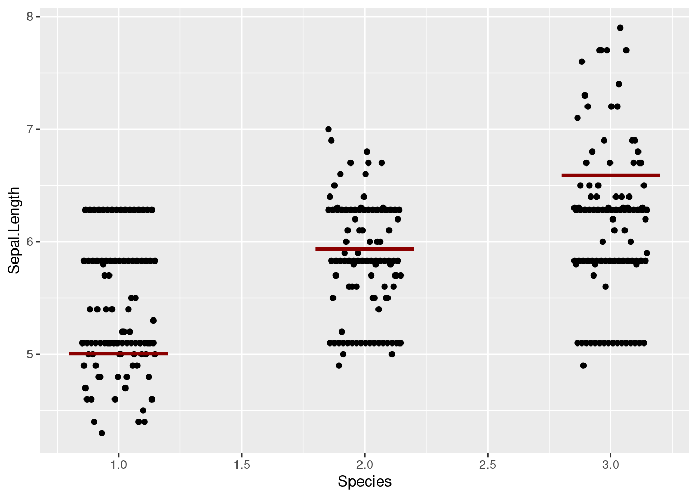

library(ggplot2)
grand_mean <- data.frame(y = mean(iris$Sepal.Length))
group_means <- sapply(unique(iris$Species), function(x) {
temp <- iris[iris$Species == x, 1]
mean(temp)
})
length_group_means <- sapply(unique(iris$Species), function(x) {
temp <- iris[iris$Species == x, 1]
length(temp) |> as.numeric()
})
ssw <- sapply(unique(iris$Species), function(x) {
temp <- iris[iris$Species == x, 1]
temp <- (temp - mean(temp))^2
})
ssw <- sum(ssw)
ssb <- Map(function(x, y) {
(grand_mean$y - x)^2*y
}, group_means , length_group_means)
ssb <- sum(ssb |> unlist())
sst <- sum( (iris$Sepal.Length - grand_mean$y)^2)
p1 <- ggplot() +
geom_point(data = iris, aes(x = Species, y = Sepal.Length)) +
geom_hline(data = grand_mean, aes(yintercept = y)) +
geom_text(data = grand_mean, aes(0.65, y + .1, label = "grand mean") ) +
stat_summary(fun = "mean", colour = "darkred",
data = iris, aes(x = Species, group = Species, y = Sepal.Length)) +
geom_text(data = data.frame(y = group_means + 0.5, x = 1:3),
aes(x = x, y = group_means, label = "group means"),
colour = "darkred")
df <- iris
df$Species <- as.integer(df$Species) |> as.numeric()
ssw_raw <- sapply(unique(iris$Species), function(x) {
temp <- iris[iris$Species == x, 1]
temp <- (temp - mean(temp))
})
ssw_raw <- data.frame(y = c(ssw_raw[1] + group_means[1],
ssw_raw[2] + group_means[2],
ssw_raw[3] + group_means[3]),
x = df$Species)
p2 <- ggplot() +
geom_point(data = df, aes(x = Species, y = Sepal.Length),
position = position_dodge2(width = 0.3)) +
stat_summary(fun = "mean", colour = "darkred", width = .4, geom = "crossbar",
data = df, aes(x = Species, group = Species, y = Sepal.Length)) +
geom_line(data = ssw_raw, aes(group = x2, y = y2, x = x1))
p3 <- ggplot() +
geom_point(data = df, aes(x = Species, y = Sepal.Length),
position = position_dodge2(width = 0.3)) +
geom_point(data = ssw_raw, aes(x, y),
position = position_dodge2(width = 0.3)) +
stat_summary(fun = "mean", colour = "darkred", width = .4, geom = "crossbar",
data = df, aes(x = Species, group = Species, y = Sepal.Length))
p3